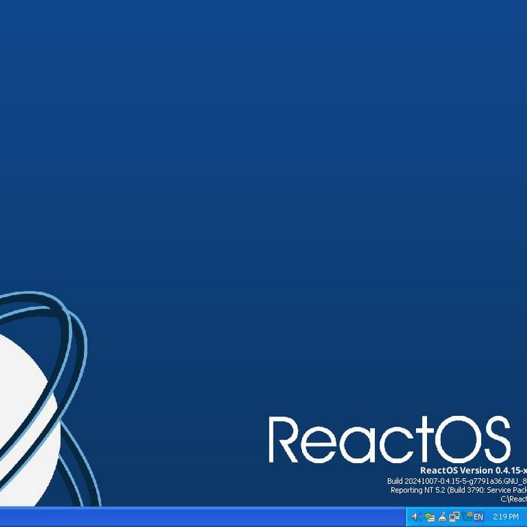
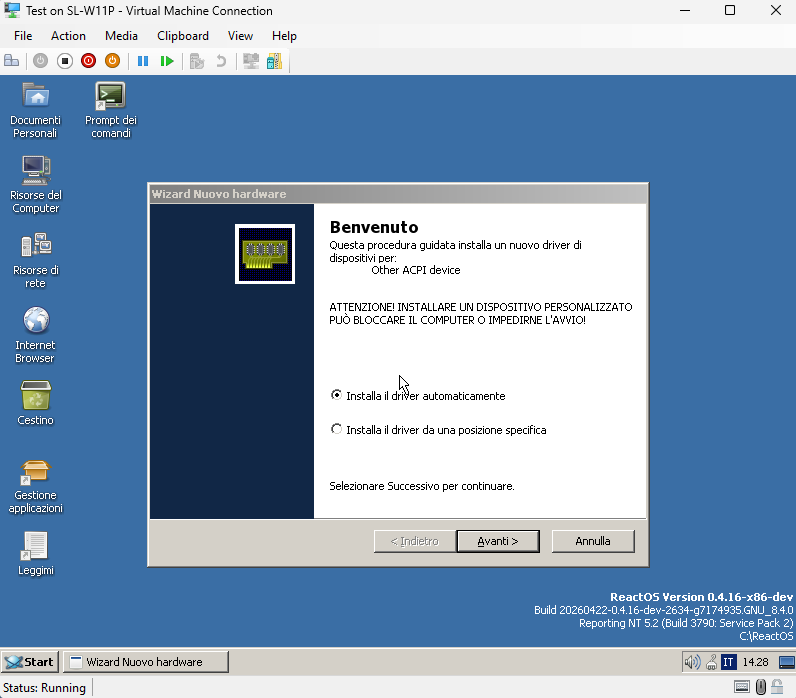

ReactOS作为Windows NT内核的开源版本，至今仍处于Alpha阶段，总算能在Hyper-V上跑了
除了ReactOS完全复刻了Windows以外，Linux上还有Wine兼容层，Valve就以其中的一个分支开发了Proton并对DX9做了支持。此外还有CrossOver软件，据说CodeWeavers也参与了Valve Proton的合作开发，算是macOS上运行Windows程序的一种解决方案
不过在家倒是可以用Parsec之类的方案，至于懒得搭建还有现成的云游戏平台。有国外的NVIDIA GeForce NOW，也有国内的顺网云电脑（万象网管）在做，但基本都是就近节点为主，省内的延迟在7-8ms以内。不过短期看来，云游戏仍受限于网络因素及串流延迟，至今并没有较好的解决方案
除了ReactOS完全复刻了Windows以外，Linux上还有Wine兼容层，Valve就以其中的一个分支开发了Proton并对DX9做了支持。此外还有CrossOver软件，据说CodeWeavers也参与了Valve Proton的合作开发，算是macOS上运行Windows程序的一种解决方案
不过在家倒是可以用Parsec之类的方案，至于懒得搭建还有现成的云游戏平台。有国外的NVIDIA GeForce NOW，也有国内的顺网云电脑（万象网管）在做，但基本都是就近节点为主，省内的延迟在7-8ms以内。不过短期看来，云游戏仍受限于网络因素及串流延迟，至今并没有较好的解决方案

